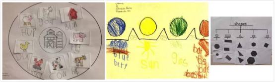
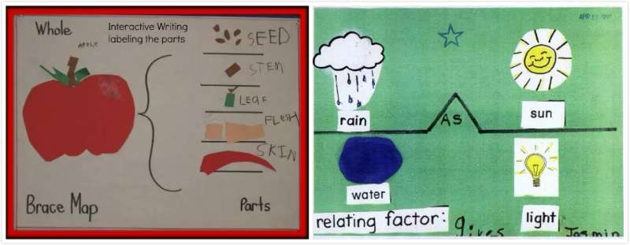
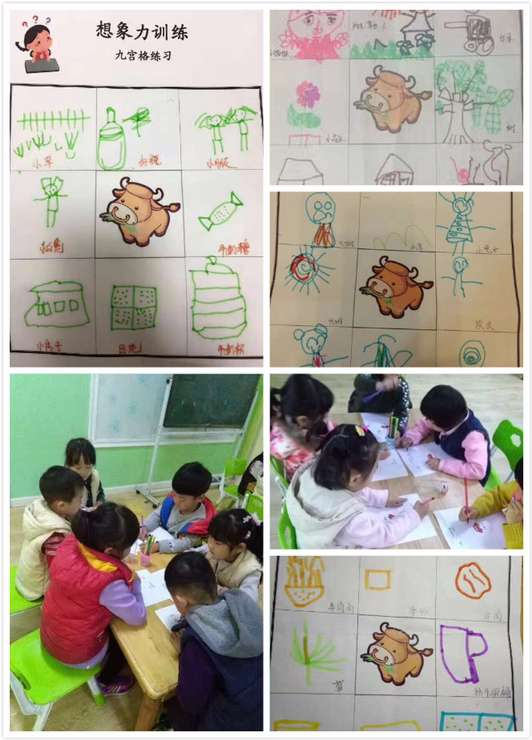

近期，曾因帮助查尔斯王子提高记忆力而被誉为英国的“记忆力之父”，也是“心智文化概念”的创始人Tony Buzan（东尼·博赞）通过视频表示，2017年8月19日将定为世界思维导图日。
最近几年来，我们会经常接触到这个字眼——“思维导图”。没错，它确实跟“思维有关”。要好好说道说道这个词，恐怕得从这位英国著名心理学家说起。
有一次，Tony Buzan在研究大脑的力量和潜能的过程中，留意到一件事情。我们伟大的艺术家达·芬奇（就是小时候课文中不停画鸡蛋的那位，他还画了一幅被全世界人民都玩坏的《蒙娜丽莎的微笑》，想起来了吧）在自己的笔记中使用了很多图画、代号和连线。这位心理学家敏锐地感觉到，这一定是达芬奇拥有超级头脑的秘密所在。
于是乎，东尼·博赞兢兢业业，终于在19世纪的60年代发明了“思维导图”，号称风靡全球的思维工具。
思维导图强调通过多彩的颜色、弯曲的线条，来刺激大脑，引发灵感和强化记忆。它强调以关键词来记忆，而非一个一个的句子来阐释。
  美国幼儿思维导图作品打个比方，假如您的生日就要到了,您想怎样庆祝您的生日?这时候大家一定有许多的想法...... 现在我们来看看一个孩子的思考:
首先我要知道我的生日是哪一天?生日这天我要邀请三个好朋友分享我的快乐;我想在温馨的家里庆祝我的生日;生日前我要用彩链、气球、星星来装饰我的客厅;我还要准备许多好吃:橙汁、巧克力、蛋糕;我还要准备许多好玩的游戏:芭比娃娃、国际象棋、画画;生日结束我还要送好朋友每人一件礼物。
这就是一个孩子的思维导图,把生日会的所有要素用线条、色彩、图象绘制出来,呈现了孩子的思维轨迹。
再比如老师讲“猫”的知识，从生活中常见的猫的品种，再到猫的奇特本领。现在的猫被视作宠物，古代也的人们也喜欢猫吗？学过的诗歌里有猫的诗篇吗。过去的唐朝大画家，怎样表现猫的特点？也会发微信，上微博吗？
这在孩子眼里，多么有趣。这样想来，学习“思维导图”是一件多么有意义的大事！
可是对于一个孩子来说，他有的时候可能看到的，仅仅是一个点，好比蜘蛛织网，开始拉线，最后成为看似错综复杂但又无比有序的一张网。那么如何让孩子可以做到呢？
这就是思维训练的开始。
其实思维导图的这种模式，在我国幼儿园体系中的主题课程中早就有很好的渗透。在《幼儿园教育指导纲要》（2001）中，有第三部分“组织与实施”中的第六条，是这样描述的：“教育活动内容的组织应充分考虑幼儿的学习特点和认识规律，各领域的内容要有机联系，相互渗透，注重综合性、趣味性、活动性，寓教育于生活、游戏之中。”
这里的“综合性”，在更多的体现在幼儿园教学探索课程中。但仅仅只是探索。
如今，这门专业课程也来到了中国的幼儿园成为了一个独立而有趣的课程。那就是联帮在线幼儿思维导图课。让我们一起来体验下吧：
 中国联帮在线思维导图作品之想象力篇看到一头牛，你会想到什么呢？每个孩子的头脑中都有一个奇妙的小小世界。联帮在线幼儿思维导图课的九宫格作业单，训练孩子的发散思维联想力。从这些独一无二的作品中，老师和家长们可以了解每个孩子不同的认知发展水平和生活经验。多多鼓励孩子去表达和分享自己所画的作品，然后惊叹于他们天马行空的想象吧。
我们常常说，孩子的思维的构建是一个从易到难的过程。其实这个构建的过程，也是孩子的思维方式变化，尤其是个性思维方式逐步完善的过程。不管是何种讯息有一个端口引入，必将有个端口发出，最终表现为孩子自身的创造力、思维力等等。